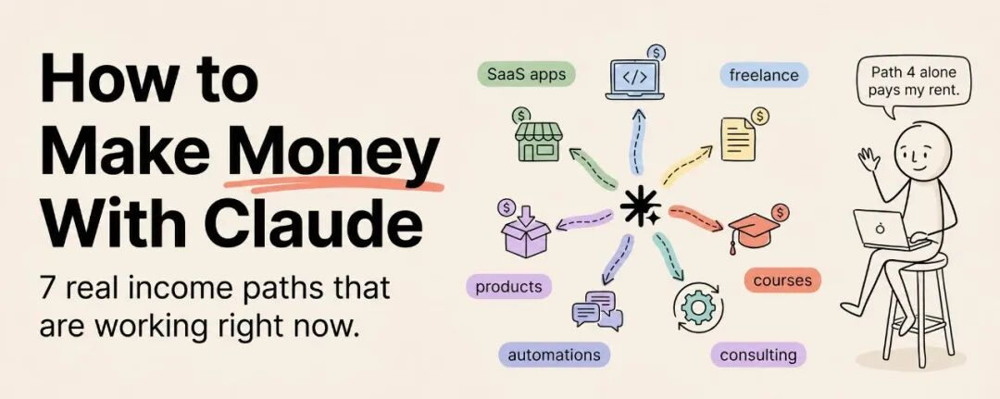

先直说。
互联网上大多数“用 AI 赚钱”的内容，基本都是垃圾。
它们会告诉你：
- • 去做一个无脸 YouTube 频道
- • 卖 prompt 包
- • 或者“做个 SaaS，每月收 49 美元”
仿佛这一切都像按个按钮那么简单。
这篇不是那种内容。
这篇要讲的是：2026 年此刻，真实的人正在用 Claude 赚钱的 7 条路径。
不是理论。
不是“有一天可能可行”。
而是现在就有人在做，而且已经产生收入。
每一条路径，我都会拆开说：
- • 它到底是什么
- • 大致收入区间是多少
- • 你起步需要准备什么
- • 以及，怎么拿到第一个付费客户
没有 hype。
没有假截图。
只讲真正有效的东西。

路径 1：Claude 驱动的自由职业服务
它是什么
你卖的是一种服务，而这项服务的交付过程由 Claude 驱动。
比如：
- • 写作
- • 调研
- • 分析
- • 数据处理
- • 内容生产
- • 战略支持
只要是 Claude 能显著提速的知识型工作，你都可以把它包装成服务。
大多数人忽略的关键点
你不是在卖“AI 生成内容”。
你卖的是 结果。
客户根本不在意你用什么工具。
他们只在意：
- • 交付物够不够好
- • 交付够不够准时
- • 有没有解决他们的问题
一个用 Claude 把同等质量内容产能提升 3 倍的 freelance writer，本质上只是一个更快、更稳的 writer。
一个用 Claude 把本来几天的研究压缩到几小时的 consultant，本质上只是一个交付更快的 consultant。
收入区间
每月大约 $2,000 到 $15,000，取决于：
- • 你卖的服务类型
- • 所在 niche
- • 客户质量
你需要准备什么
- • 一项明确而具体的服务（别一开始就写“我什么都做”）
- • 一个配置好客户品牌风格和偏好的 Claude Project
- • 3–5 个用 Claude workflow 做出来的 portfolio samples
- • 一个 Upwork、Fiverr 或 niche 平台上的服务资料页
怎么拿到第一个客户
选你最擅长的一项服务。
用 Claude 做出 3 份样本，要求是“非常好”，不是“凑合能看”。
把这些作为 portfolio。
前 1 个项目先定价到比市场价低 30% 左右，用来快速拿到评价和 testimonial。
做完 5 个项目后再涨价。
目前最适合 Claude 的服务类型
- • 长文写作（博客、文章、白皮书）
- • Research report 和 competitive analysis
- • 邮件营销序列
- • 社媒内容包（月度 30 条帖子）
- • 数据分析与报告生成
- • 技术文档
- • 演示文稿 / pitch deck
这条路径的复利点
每做一个客户项目，你的 Claude 工作流都会变强。
- • prompt 会越来越准
- • knowledge files 会越来越完整
- • 模板会越来越成熟
到第 10 个客户时，你的交付速度可能已经是第 1 个客户时的 3 倍。
利润率会随着项目数一起上升。
路径 2：构建并销售 Claude Skills / Plugins
它是什么
你去制作 Skills（指令文件）和 Plugins（打包好的能力模块），让其他 Claude 用户安装使用。
为什么现在真有机会
Skills 市场正在爆发。
已经有 8 万多个社区 Skill，而高质量、垂直化的需求仍在快速增长。
目前大多数 Skill 其实都很基础。
所以现在要脱颖而出，门槛仍然不高。
收入区间
每月 $500 到 $10,000+，取决于：
- • 你做的 niche
- • Skill 质量
- • 传播能力
你需要准备什么
- • 理解 Skills / Plugins 是怎么工作的
- • 选一个你真的懂、或者能迅速变懂的领域
- • 用 Claude 帮你写 Claude Skill（对，Claude 帮你造 Claude 自己的工具）
- • 一个分发方式：Plugin marketplace、GitHub、或自己的网站
怎么做出第一个 Skill
找一个你自己已经重复做了很多次的 workflow。
比如：
- • 内容研究
- • SEO 审核
- • 财务分析
- • 客户 onboarding
- • 竞品情报
然后让 Claude 帮你把它写成 SKILL.md。
反复自己测试，修到稳定产出可用结果后，再打包发给别人。
哪种 Skill 更容易卖
- • 强垂直领域的 Skill（法律、医疗、房地产、金融等）
- • 明确角色型插件（PM、营销、招聘等）
- • 能节省明确时间成本的自动化 workflow
- • 能稳定产出专业交付物的技能（报告、proposal、presentation）
路径 3：AI 自动化咨询
它是什么
你帮公司搭 AI workflow：
用 Claude、Cowork、MCP、Skills 等，去审视它们的业务流程，找出能自动化的部分，帮它们搭起来，然后按项目收费。
为什么现在能成立
很多公司已经知道自己“应该用 AI 了”，但根本不知道怎么落地。
他们看过新闻。
也知道竞争对手在上。
但公司内部没有人真正会做这件事。
你可以成为这个人。
收入区间
- • 单个项目：$3,000 到 $25,000
- • 后续 retainer：每月 $2,000 到 $10,000
你需要准备什么
- • 对 Claude 生态的深入理解（chat、API、Cowork、Skills、MCP、Plugins）
- • 能看懂业务流程，并找出可自动化节点
- • 几个自己做过的 case studies
- • 基本业务沟通能力
怎么拿第一个咨询客户
先给自己做 3 个自动化案例。
把每个案例的：
- • 做了什么
- • 花了多久
- • 节省了多少时间
写清楚。
然后去找熟人 network 里的中小企业，说：
我做了一套 AI 自动化系统，每周能帮我省 15 小时。现在我可以帮企业搭类似系统。我愿意先免费给你做一小时 workflow audit，看看哪些地方值得自动化。如果你觉得有价值，我们再谈项目。
先从中小企业做起。
因为：
- • 流程没那么复杂
- • 决策快
- • 更愿意为直接价值买单
路径 4：构建 AI 产品
它是什么
你做一个产品：
- • web app
- • 工具
- • 服务
底层用 Claude API 驱动智能层，对用户收费。
收入区间
从 $0 到几乎无上限。
这是上限最高，但同时风险也最高的一条路。
关键提醒
不要做“一个 AI 工具”。
要做的是：
一个解决具体问题的工具，只是它恰好用到了 AI。
用户不关心你用的是 Claude。
他们关心的是：
- • 省没省时间
- • 赚没赚钱
- • 有没有解决真实痛点
目前可行的产品方向
- • 垂直内容工具（比如地产文案、商品 listing、学术摘要）
- • 特定行业的自动报表 dashboard
- • 基于企业知识库训练的客户聊天助手
- • 面向某一类文档的处理工具（合同、发票、病历等）
- • 垂直研究助手
在开工前怎么验证
去找目标用户聊 10 个人。
问他们 workflow 里最浪费时间的环节是什么。
如果其中至少 5 个人都说到了同一类问题，那你就已经有方向了。
然后用 Claude Code 做一个最简 MVP。
最重要的是：第一天就收费。
哪怕只是 10 美元 / 月。
真正的验证，不是“用户说不错”，而是“用户肯掏钱”。
路径 5：AI 教育 / 培训
它是什么
你教别人怎么更有效地用 Claude。
形式可以是：
- • 课程
- • workshop
- • coaching
- • content
- • 付费社区
为什么成立
Claude 的真实能力和大多数人实际使用方式之间，还存在巨大的落差。
这个落差本身，就是教育机会。
企业需要培训团队。
专业人士需要提升技能。
初学者需要被带进去。
收入区间
每月 $1,000 到 $50,000+，取决于形式和受众规模。
常见形式
- • 在线课程（每人 $50–$500）
- • 企业 workshop（每场 $2,000–$10,000）
- • 1v1 coaching（每小时 $100–$500）
- • 付费社区（每人每月 $20–$100）
- • YouTube / X 内容导向付费产品
怎么开始
先免费教。
写文章。
发 thread。
做视频。
把真实 workflow 拆开给别人看。
先建立可信度，再卖付费产品。
content-first 虽然更慢，但转化率通常高得多。
路径 6：Claude 驱动的 Agency 服务
它是什么
你不再只是一个 freelancer，而是把 Claude workflow、Skills、模板和流程打包成一套“可规模化交付系统”，然后用 agency 方式服务多个客户。
收入区间
每月 $10,000 到 $100,000+。
和 freelancing 的根本区别
freelancer 卖的是时间。
agency 卖的是系统。
当你的交付已经被 Claude 工作流和模板体系大幅自动化后，你就能用服务 3 个客户的时间，服务 10 个客户。
最适合 agency 化的服务
- • 内容生产（博客、社媒、newsletter）
- • 市场研究和竞品情报
- • 客服知识库与支持文档
- • 财务报表和数据分析
- • 招聘研究和候选人筛选
推荐起步方式
先走 Path 1，变成 freelancer。
当你已经有了 3–5 个客户后，再把交付流程系统化。
然后雇一个 VA 先接管客户沟通，你自己专注在质量控制和新业务开发。
路径 7：为客户构建 AI Agents 系统
它是什么
你不只是帮客户搭“自动化”，而是直接为他们做：
- • 多 agent workflows
- • 自定义 AI assistants
- • 复杂的 agentic systems
也就是专门围绕客户业务流程量身定制一整套 AI agents。
这是目前付费水平最高的一条路。
很多公司现在愿意为这类定制系统支付：
- • $5,000 到 $50,000 / 项目
- • 后续维护和优化 retainer 还会带来持续收入
你需要准备什么
- • 对 Claude agent 能力的深入理解
- • 构建多步骤自动化系统的经验
- • 能和客户一起定义 scope、拆流程、设计方案
- • 几个你自己先搭过的 agents 案例
怎么定位自己
先为自己的业务做 3 套 agent systems。
然后把每一套的：
- • 前后变化
- • 节省时间
- • 工作方式
写成 case study。
对外的 pitch 也不要说：
我做 AI 解决方案。
这种话太空了。
要说：
我给营销团队做自动化 research agents，把 4 小时的竞品情报压缩到 15 分钟。
越具体，越容易成交。
如果你是新手，我最推荐哪条起步路径？
如果你现在：
- • 没经验
- • 没作品集
- • 也没有付费客户
那最适合的起点就是：
从路径 1 开始：自由职业服务
作者给了一条非常清晰的成长路线：
第 1–2 个月
- • 选 1 项服务
- • 把 Claude workflow 跑顺
- • 做 5 个 portfolio 样本
- • 用低价拿下前 3 个客户
第 3–4 个月
- • 提价
- • 优化 workflow
- • 把客户项目沉淀成 Skills 和模板
- • 收集 testimonials
第 5–6 个月
- • 再从咨询、产品、教育、agency 里挑下一条扩展路径
这时候你已经有：
- • 真实经验
- • 真实案例
- • 真实交付 workflow
所有后面的路径，本质上都建立在同一个基础上：
先证明你能用 Claude 真正交付价值。
先把这个证明做出来。
其他事情自然会跟上。
最后一句：别研究 7 条路，先选 1 条开始
大多数人会把 7 条路径都看完。
然后一条都不开始。
真正会做出结果的人，是今天就选一条，然后在这个月拿下第一个客户的人。
90 天之后，他们已经不是“在研究 AI 赚钱”。
他们已经在靠 AI 建立真实收入。
这篇文章最有价值的地方，不是给你更多想象空间。
而是把“Claude 赚钱”从空泛概念，拆成了 7 条你今天就能开始走的具体路线。
关键不是把 7 条都学完。
而是：现在就选 1 条，做起来。